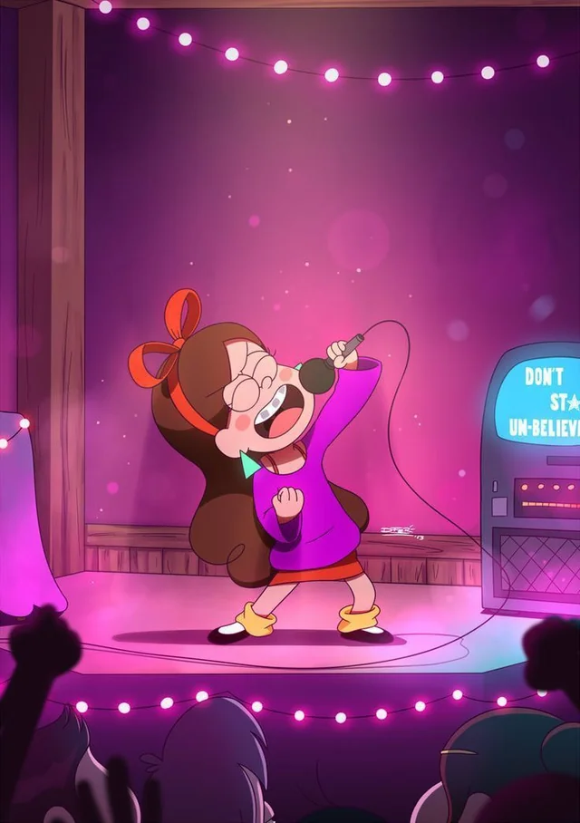
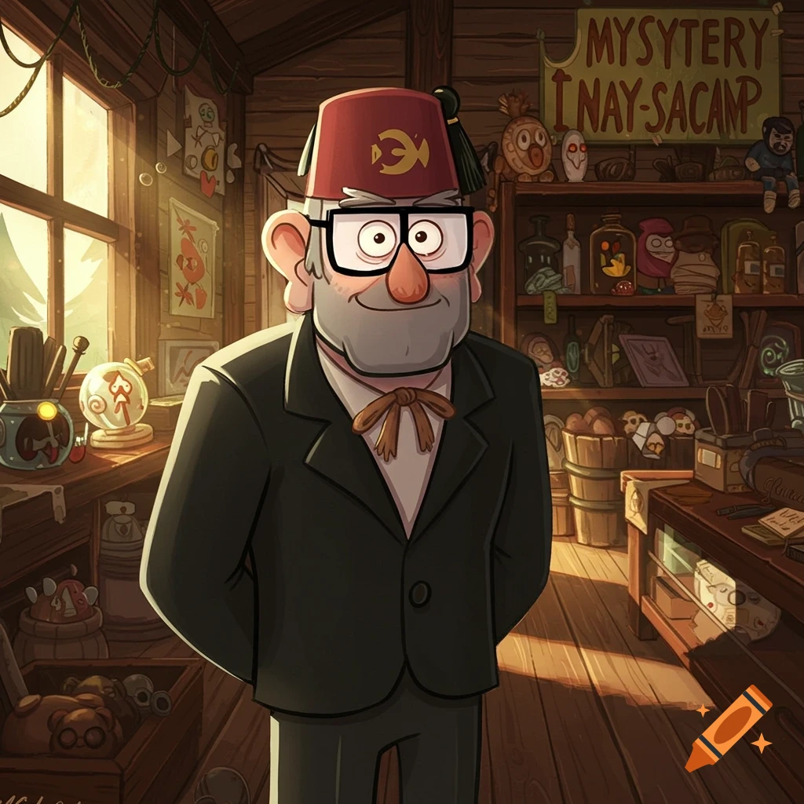
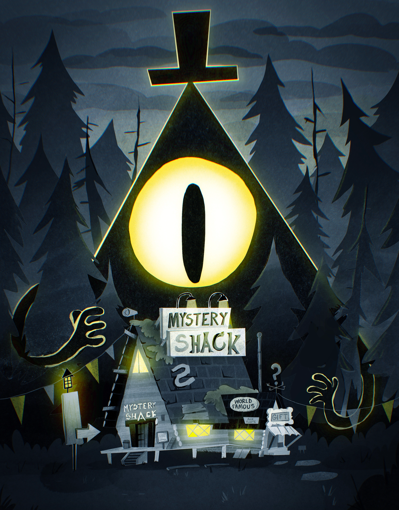

Personajes Principales

Dipper Pines
Curioso, inteligente y obsesionado con los misterios.

Mabel Pines
Optimista, divertida y amante de los sueteres.

Stan Pines
Dueño de la Cabaña del Misterio y lleno de secretos.

Bill Cipher
Entidad interdimencional caotica y peligrosa.